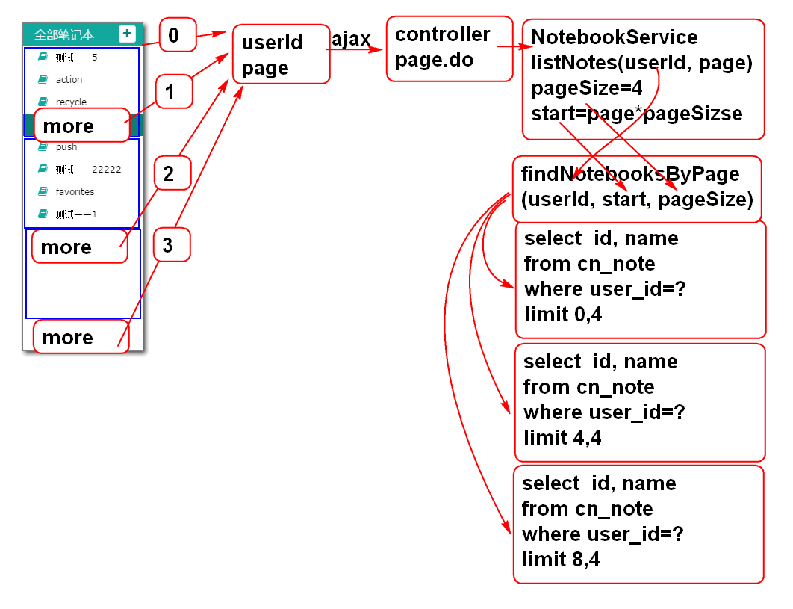
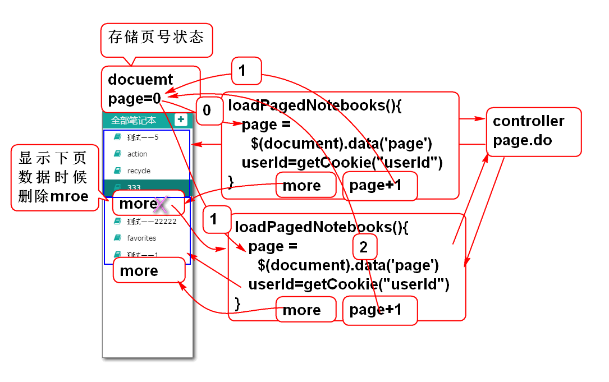
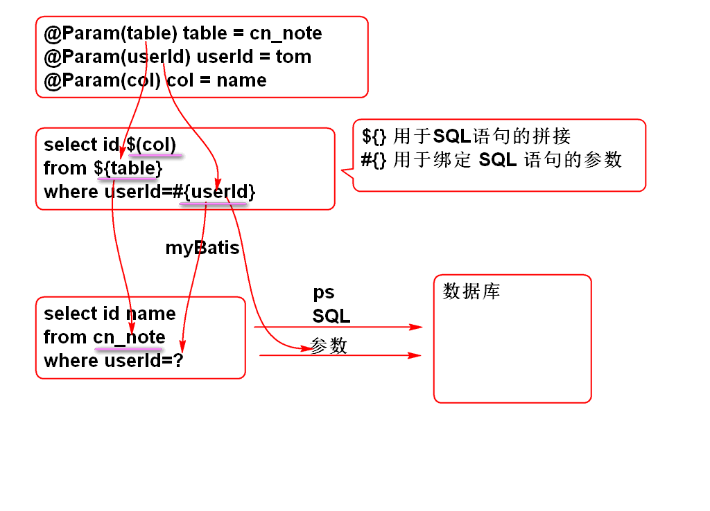
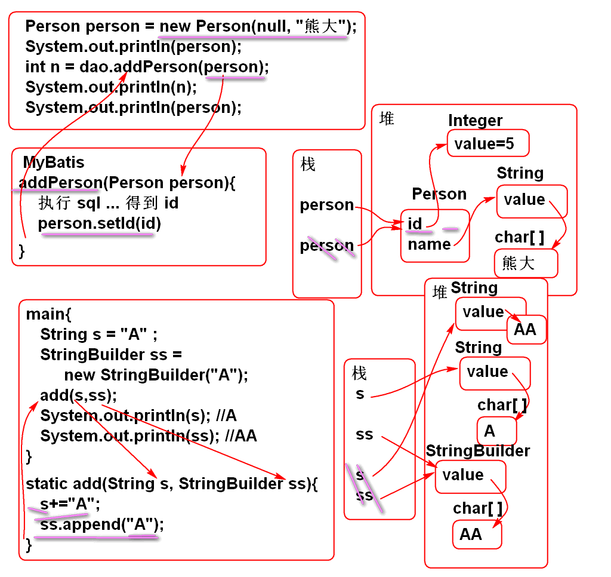

利用 FormData 对象和 Spring MVC 配合可以实现Ajax文件上载功能:
原理:
案例:
<!DOCTYPE html>
<html>
<head>
<meta charset="UTF-8">
<title>Insert title here</title>
<script type="text/javascript"
src="scripts/jquery.min.js"></script>
<script type="text/javascript">
$(function(){
$('#upload').click(ajaxUpload);
});
function ajaxUpload(){
var file1 = $('#file1')[0].files[0];
var file2 = $('#file2')[0].files[0];
//创建内存中的表单对象
var form = new FormData();
//添加向服务器传输的数据
form.append('userfile1', file1);
form.append('userfile2', file2);
$.ajax({
url:'user/upload.do',
data: form,
type: 'POST',
dataType: 'json',
contentType: false,
processData: false,
success: function(obj){
if(obj.state==0){
$('#result').html("成功!");
}
}
});
}
</script>
</head>
<body>
<h1>Ajax 文件上载</h1>
<input type="file" id="file1"> <br>
<input type="file" id="file2"> <br>
<input type="button" id="upload"
value="上载" >
<div id="result"></div>
</body>
</html>
提示: 服务端重用上节课的案例.
在MyBatis中, 利用 @Param 注解, 可以实现多参数查询
原理:

案例:
NoteDao接口
List<Map<String, Object>> findNotes(
@Param("userId") String userId,
@Param("notebookId") String notebookId,
@Param("statusId") String statusId);
SQL 语句: NoteMapper.xml
<select id="findNotes" resultType="map">
select
cn_note_id as id,
cn_note_title as title
from
cn_note
<where>
<if test="userId !=null">
cn_user_id = #{userId} and
</if>
<if test="notebookId != null">
cn_notebook_id = #{notebookId} and
</if>
cn_note_status_id = #{statusId}
</where>
order by
cn_note_last_modify_time desc
</select>
MyBatis 提供了灵活的动态SQL功能, 只需要使用映射文件的标签就可以到达灵活的拼接SQL语句的功能:
<foreach> 标签的使用批量删除笔记功能:
原理:

持久层方法 NoteDao
int deleteNotes(
@Param("ids") String... ids);
定义SQL NoteMapper.xml
<delete id="deleteNotes">
delete from cn_note
where
cn_note_id in
<foreach collection="ids"
item="id"
open="(" separator="," close=")">
#{id}
</foreach>
</delete>
测试 NoteDaoTest
@Test
public void testDeleteNotes(){
String id1="07305c91-d9fa-420d-af09-c3ff209608ff";
String id2="5565bda4-ddee-4f87-844e-2ba83aa4925f";
String id3="1ec185d6-554a-481b-b322-b562485bb8e8";
int n = dao.deleteNotes(id1, id2, id3);
System.out.println(n);
}
set标签用于生成 set 子句
trim 标签用于去除多余的 逗号, and 或 or
<update id="updateNote"
parameterType="cn.tedu.note.entity.Note">
update
cn_note
<set>
<trim suffixOverrides=",">
<if test="notebookId!=null">
cn_notebook_id=#{notebookId},
</if>
<if test="userId!=null">
cn_user_id=#{userId},
</if>
<if test="statusId!=null">
cn_note_status_id=#{statusId},
</if>
<if test="typeId!=null">
cn_note_type_id=#{typeId},
</if>
<if test="title!=null">
cn_note_title=#{title},
</if>
<if test="body!=null">
cn_note_body=#{body},
</if>
<if test="lastModifyTime != null">
cn_note_last_modify_time=#{lastModifyTime}
</if>
</trim>
</set>
where
cn_note_id=#{id}
</update>
where标签用于生成 where 子句
trim 标签用于去除多余的 逗号, and 或 or
<select id="findNotes" resultType="map">
select
cn_note_id as id,
cn_note_title as title
from
cn_note
<where>
<trim suffixOverrides="and">
<if test="userId !=null">
cn_user_id = #{userId} and
</if>
<if test="notebookId != null">
cn_notebook_id = #{notebookId} and
</if>
<if test="statusId!=null">
cn_note_status_id = #{statusId}
</if>
</trim>
</where>
order by
cn_note_last_modify_time desc
</select>
翻页公用与其他业务功能的设计是一样的:

实现步骤
持久层接口 NotebookDao
List<Map<String, Object>> findNotebooksByPage(
@Param("userId") String userId,
@Param("start") int start,
@Param("pageSize") int pageSize,
@Param("table") String table);
SQL 定义 NotebookMapper.xml
<select id="findNotebooksByPage"
resultType="map">
select
cn_notebook_id as id,
cn_notebook_name as name
from
${table}
where
cn_user_id = #{userId}
order by
cn_notebook_createtime desc
limit #{start}, #{pageSize}
</select>
${table} 可以替换SQL语句的表名, 实现动态SQL拼接查询, 尽量不要用于参数部分, 否则可能有SQL注入风险.
limit 子句是MySQL专用的, 其他数据库不支持.
业务层接口 NotebookService
List<Map<String, Object>>listNotebooks(
String userId, Integer page)
throws UserNotFoundException;
实现业务层方法 NotebookServiceImpl
@Value("#{jdbc.pageSize}")
private int pageSize;
public List<Map<String, Object>>
listNotebooks(
String userId, Integer page)
throws UserNotFoundException {
if(userId==null || userId.trim().isEmpty()){
throw new UserNotFoundException("ID不能空");
}
User user = userDao.findUserById(userId);
if(user==null){
throw new UserNotFoundException("用户不存在");
}
if(page==null){
page = 0;
}
int start = page * pageSize;
String table = "cn_notebook";
return notebookDao.findNotebooksByPage(
userId, start, pageSize, table);
}
变量table用于动态设置SQL查询的表名
在配置文件中证据页面大小参数 jdbc.properties
pageSize=4
测试 NotebookServiceTest
@Test
public void testAddStars(){
String userId="03590914-a934-4da9-ba4d-b41799f917d1";
boolean b = service.addStars(userId, 5);
System.out.println(b);
b = service.addStars(userId, 6);
System.out.println(b);
}
控制器 NotebookController
@RequestMapping("/page.do")
@ResponseBody
public JsonResult page(String userId,
Integer page){
List<Map<String, Object>> list=
notebookService.listNotebooks(
userId, page);
return new JsonResult(list);
}
原理:

重构ready方法:
//在document对象中存翻页页号状态
$(document).data('page',0);
//加载第一页数据
loadPagedNotebooks();
//点击more时候加载下一页数据
$('#notebook-list').on(
'click','.more', loadPagedNotebooks);
添加事件处理方法
function loadPagedNotebooks(){
var page = $(document).data('page');
var userId = getCookie('userId');
//从服务器拉去数据
var url = 'notebook/page.do';
var data = {userId: userId, page:page};
$.getJSON(url, data, function(result){
if(result.state==SUCCESS){
var notebooks = result.data;
showPagedNotebooks(notebooks, page);
$(document).data('page', page+1);
}else{
alert(result.message);
}
});
}
添加 分页显示笔记本列表方法:
function showPagedNotebooks(notebooks, page){
var ul = $('#notebook-list ul');
if(page==0){//第一页时候清空 ul中的li
ul.empty();
}else{//不是第一页, 只删除.more元素
ul.find('.more').remove();
}
for(var i=0; i<notebooks.length; i++){
var notebook=notebooks[i];
var li = notebookTemplate.replace(
'[name]', notebook.name);
li = $(li);
li.data('notebookId', notebook.id);
ul.append(li);
}
if(notebooks.length!=0){
ul.append(moreTemplate);
}
}
var moreTemplate =
'<li class="online more">'+
'<a><i class="fa fa-plus" title="online" '+
'rel="tooltip-bottom"></i> 加载更多...</a>'+
'</li>';
测试 ...
在MyBatis中

MyBatis可以返回自动增加的ID:
SQL:
create table p_person(
id int not null AUTO_INCREMENT,
name varchar(100),
primary key(id)
);
insert into p_person (name) values ('李老师');
insert into p_person (id, name) values (null,'李老师');
id AUTO_INCREMENT 就是MySQL的自增类型
实体:
public class Person implements Serializable {
private static final long serialVersionUID = -2365398342302306276L;
private Integer id;
private String name;
public Person() {
}
public Person(Integer id, String name) {
super();
this.id = id;
this.name = name;
}
public Integer getId() {
return id;
}
public void setId(Integer id) {
this.id = id;
}
public String getName() {
return name;
}
public void setName(String name) {
this.name = name;
}
@Override
public String toString() {
return "Person [id=" + id + ", name=" + name + "]";
}
@Override
public int hashCode() {
final int prime = 31;
int result = 1;
result = prime * result + ((id == null) ? 0 : id.hashCode());
return result;
}
@Override
public boolean equals(Object obj) {
if (this == obj)
return true;
if (obj == null)
return false;
if (getClass() != obj.getClass())
return false;
Person other = (Person) obj;
if (id == null) {
if (other.id != null)
return false;
} else if (!id.equals(other.id))
return false;
return true;
}
}
PersonMapper.xml
<mapper namespace="cn.tedu.note.dao.PersonDao">
<!-- 在插入时候读取自动生成的ID
打开useGeneratedKeys="true" 可以读取自增ID
设置 keyProperty="id" 告诉MyBatis将读取结果
赋值给 参数 person对象的 id 属性 -->
<insert id="addPerson"
parameterType="cn.tedu.note.entity.Person"
useGeneratedKeys="true"
keyProperty="id">
insert into p_person(
id,
name
)values(
null,
#{name}
)
</insert>
</mapper>
测试:
public class PersonDaoTest extends BaseTest {
PersonDao dao;
@Before
public void initDao(){
dao = ctx.getBean(
"personDao", PersonDao.class);
}
@Test
public void testAddPerson(){
Person person = new Person(null, "熊大");
System.out.println(person);
int n = dao.addPerson(person);
System.out.println(n);
System.out.println(person);
}
}
ID赋值原理:

练习:
public class Demo01 {
public static void main(String[] args) {
int n = 2;
final int[] ary = {2};
test(n, ary);
System.out.println(n); //2
System.out.println(ary[0]); //3
}
public static void test(
Integer i, int[] ary){
i = i++;
ary[0]++;
}
}